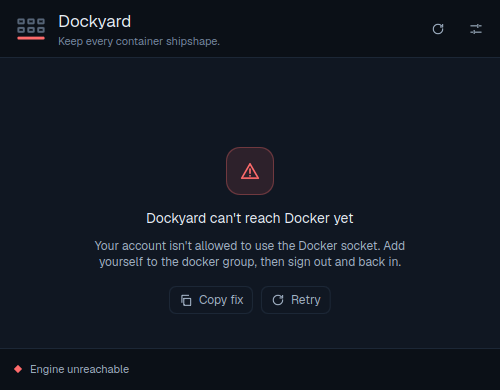

Docker と Podman を、KDE パネルで整然と
Dockyard は Plasma 6 用の無料のオープンソースウィジェットです。すべてのコンテナーをひと目で確認でき、デスクトップを離れずに開始・停止・再起動・ログ閲覧・クリーンアップができます。Fedora KDE 向けに作られています。
無料 · MIT ライセンス · テレメトリーなし · Docker、rootless Docker、Podman 対応

船の積荷目録のように描かれた、あなたのコンテナー全体
- 実行中
- 要注意
- 一時停止中
- 停止中
1つのセルが1つのコンテナーで、状態によって色が変わります。状態が変わってもセルは同じ位置にあるので、問題は探さなくても目に入ります。セルをクリックすると、一覧がそのコンテナーへジャンプします。各状態には色だけでなく固有の形もあるため、色が見分けにくくても読み取れます。
壊れる前に気づく
実行中のすべての CPU とメモリを履歴付きで表示。実行中・要注意・停止中をワンクリックで絞り込めます。コンテナーがクラッシュしたり、unhealthy になったり、再起動を繰り返したりすると、デスクトップ通知が届きます。
- Compose プロジェクトごとにグループ化
- プロジェクト全体をまとめて開始・停止・再起動
- コンテナーごとの CPU・メモリ・ネットワークをリアルタイム表示

エンジンが把握しているすべて
イメージ、ボリューム、ネットワークは1タブ先にあり、使用中・未使用のバッジが付きます。不要なものは削除できます。まだ使用中なら、エンジンが拒否して Dockyard が理由を伝えます。クリーンアップパネルは、確認の前に各操作が何を削除し、どれだけ空くかを示します。
- ぶら下がり・未使用のイメージ、匿名ボリューム、ビルドキャッシュ
- 名前付きボリュームはクリーンアップで触れません
- モーダルではなく2段階の確認

問題が起きても落ち着いて
Docker が動いていない、ソケットの権限がない、エンジンが未インストール。Dockyard は何が起きたかを分かりやすい言葉で伝え、正確な対処法を示します。コピーや Docker の起動もボタンひとつです。
- Docker、rootless Docker、Podman を自動検出
- どのコンテナーのライブログも色分けして表示
- コンテナー内のシェルをワンクリックで起動


あなたの言語で
Dockyard はシステムの言語に従い、ポップアップの地球儀ボタンでいつでも切り替えられます。言語の追加はファイル1つで、コードは不要です。

すべて揃っています
- マニフェストストリップ: 全体をクリックできる1列に
- 全体のメトリクス: 履歴付きの CPU とメモリ
- Compose 対応: プロジェクトのグループ化・折りたたみ・操作
- ライブログ: 色分け、一時停止、コピー
- シェルアクセス: Konsole で bash または sh を開く
- クリックできるポート: ブラウザーで開く、またはアドレスをコピー
- イメージ・ボリューム・ネットワーク: バッジ、フィルター、安全な削除
- 空き容量を確保: 確認前にサイズと内容を表示
- 通知: クラッシュ、ヘルスチェック失敗、再起動ループ
- ダークとライト: Plasma の配色とフォントに追従
- アクセシブル: どこでもキーボード操作、状態は形でも表示
- 多言語: ウィジェット内で選択、拡張も簡単
Fedora KDE に1分でインストール
前提を確認
KDE Plasma 6、Python 3（Fedora には標準で入っています）、そして Docker または Podman。それだけです。
ウィジェットをインストール
ユーザー単位で、root は不要です。
git clone https://github.com/phuonghx/dockyard cd dockyard && ./install.sh --restartパネルに追加
パネルを右クリックして「ウィジェットを追加」を選び、Dockyard を探してドラッグします。先に試すには plasmawindowed io.dockyard.widget を実行してください。
Docker に接続できない場合は、docker グループに追加してログインし直してください: sudo usermod -aG docker $USER。Podman は systemctl --user enable --now podman.socket。
更新は git pull && ./install.sh。削除は ./install.sh --uninstall。
よくある質問
Dockyard とは何ですか？
Dockyard は KDE Plasma 6 用の無料のオープンソースウィジェットです。パネルに常駐し、Docker または Podman のコンテナー、イメージ、ボリューム、ネットワークの監視・管理、ログの閲覧、ディスク容量の解放を、ターミナルや重いアプリなしで行えます。
Podman で使えますか？
はい。Docker、rootless Docker、Podman の Docker 互換ソケットを自動検出します。ウィジェットの設定でソケットのパスを指定することもできます。
対応する環境は？
KDE Plasma 6 を使う Linux デスクトップで、Fedora KDE で動作確認しています。Plasma のウィジェットなので、GNOME などでは動きません。
Docker Desktop や他のソフトは必要ですか？
いいえ。Python 3 と、動作中の Docker または Podman エンジンがあれば十分です。Dockyard はエンジンのローカルソケットと直接やり取りします。
安全ですか？データは送信されますか？
Dockyard にテレメトリーはなく、ローカルのエンジンソケット以外には何も送信しません。MIT ライセンスで、ソースは GitHub にあります。なお、どの Docker ツールでも同様に、Docker ソケットへのアクセスは root と同等です。
Docker を使う権限はどう得ますか？
sudo usermod -aG docker $USER でユーザーを docker グループに追加し、ログインし直してください。問題を検出すると、Dockyard がこのコマンドをそのまま表示します。
自分の言語に翻訳できますか？
はい。tools/i18n.sh new <言語> でテンプレートを作り、好きなエディターで翻訳して pull request を送ってください。プログラミングは不要です。CONTRIBUTING.md の Translating を参照してください。
無料でオープンソース
Dockyard は MIT ライセンスです。Issue、アイデア、翻訳、pull request を歓迎します。
作者
Xuan-Phuong Hoang。Fedora KDE のパネル上の Docker を、システムの一部のように見えて動くものにしたいと考えた開発者です。